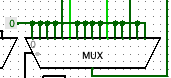
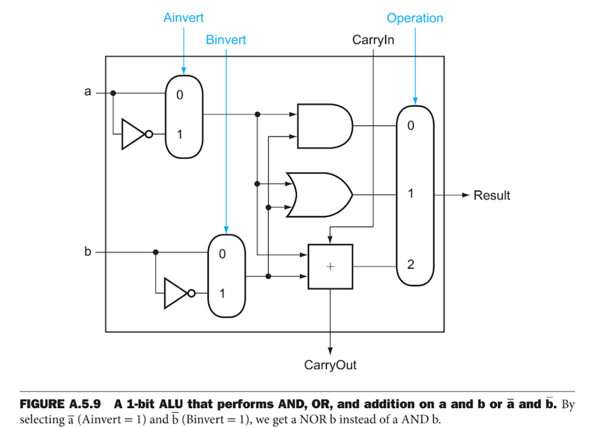
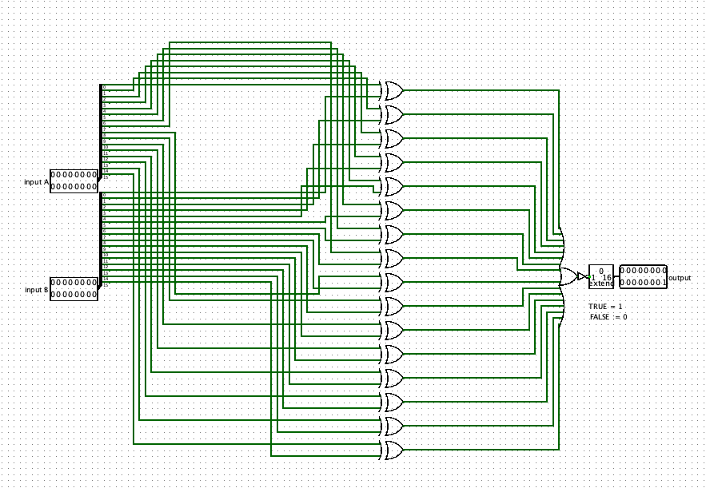
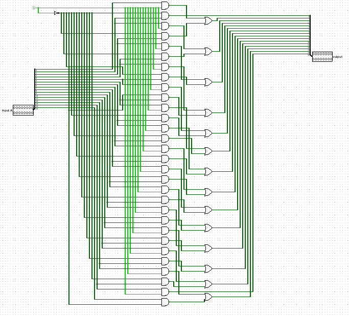

Titel: Project 3
Dit verslag werd opgesteld door:
De oplossing bestaat uit de volgende bestanden (geef alle bestanden op):
Voor het laatste project moesten we een 16-bit arithmetic logic unit (ALU) maken. Hier voor gebruikten we de 16-bit carry lookahead adder van de vorige opdrachten. De eerste operaties die onze ALU moest kunnen uitvoeren waren vrij simpel te implementeren.
Voor de 'numeric addition' gebruikten we de 16-bit CLA van project 2. De 'overflow condities van alle operaties' lieten we samenkomen in een 16-bit multiplexor, deze heeft dus dezelfde bit-grootte als de multiplexor die gebruikt word voor het kiezen welke ALU operatie moet worden uitgevoerd. Omdat er maar enkele operaties zijn waar er 'overflow' optreedt besloten we de overige inputs van de mulitplexor aaneen te schakelen met een constante, 0.

Ondanks dat we wisten dat we niet gebruik moesten maken van een nieuwe 16-bit CLA voor de 'numeric substraction' om de ALU efficienter te maken hebben we dit toch gedaan. De reden hiervoor was dat we niet goed wisten hoe we de operatie lijnen moesten implementeren zodat wanneer de operator van de ALU code op 'substraction' stond dit er dus ook voor zorgde dat de 'carryIn' op 1 werd gezet en 'input B' werd omgekeerd.

Bij het testen van van de 'numeric addition' en 'numeric substraction' met het script dat werd meegeleverd doken er ook enkele andere problemen op. Zo werd de 'overflow' conditie niet geregistreerd, maar handmatig in Logisim werkte dit wel.
De 'equals' en 'not equals' werden aan de hand van een subcircuit geimplementeerd in de 16-bit ALU. We gebruikten 16 'XOR-gates', hiervan moet er dus slechts een op 1 staan als we willen dat de output ook op 1 staat. Al deze outputs komen in een 'OR-gate', hier hoeft maar een van de outputs op 1 staan zodat de output van deze 'OR-gate' op 1 staat. Deze output komt in een 'NOT-gate'(dit is enkel bij de 'equals' operatie), de output hier van is hier natuurlijk 1 bit groot dus gebruiken we een 'bit extender' om deze om te zetten naar een 16-bit output. Wanneer 2 inputs dus gelijk zijn komt er geen enkele 1 uit de outputs van de 'XOR-gates', dit maakt de 'OR-gate' op 0 te staan, dit signaal wordt dan omgekeerd en we bekomen een juist resultaat. Bij 'not equals' wordt het signaal omgekeerd en bekomen we een fout resultaat.

We hergebruikten de 16-bit CLA terug voor de 'numeric inverse' operatie. We hebben deze operatie in feite al deels gedaan bij de 'numerieke substractie'. De input A wordt omgekeerd en de 'carryIn' wordt op 1 gezet door de constante, 1, te gebruiken. Als input B gebruikten we een constante van 16 bits. Dit is vermoedelijk niet de goedkoopste en efficiëntste oplossing, maar wel moeiteloos.
Voor de twee 'logical shift' operations werden alle inputs aangesloten aan twee aparte 'AND-gates' behalve de eerste en de laatste, deze werden aan slechts een 'AND-gate' aangesloten. We verkrijgen dus de formule: (2 * n) - 2, met n het aantal inputs. We komen met 16-bits dus op een totaal van 30 'AND-gates'. De overige inputs van de 'AND-gates' sluiten we om te beurt aan met respectievelijk constante 1 en omgekeerde van constante 1. Bij 'shift left logical' staat deze constante op 1, bij 'shift right logical' op 0. De output van de eerste en vierde 'AND-gate' komen samen in een 'OR-gate', dit wordt de tweede output, de output van de derde en zesde 'AND-gate' komen weer samen in een 'OR-gate', deze wordt derde output, ... De output van de tweede en voorlaatste 'AND-gate' worden respectievelijk de eerste en laatste output.

De twee 'arithemtic shifts' hebben we zeer primitief opgelost omdat we deels in tijdsnood geraken. Deze wordt via integer division opgelost en wanneer er 'overflow' optreedt bij de 'shift left arithmetic' wordt dit aangeduid met een 1-bit output.
We maakten gebruik van 'tunnels' om de ALU 'operation code' netjes aan elkaar aan te sluiten met de twee 'multiplexors'. Deze tunnels gedragen zich als draden die niet gezien kunnen worden.